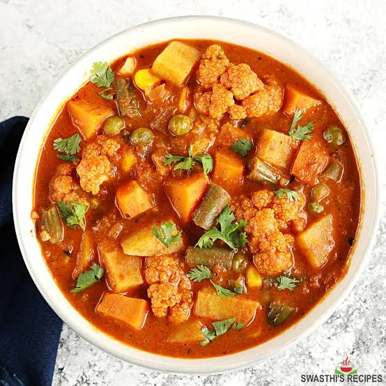

South Indian Recipes
South Indian RecipesBreakfast
Rice items
Sambars and Curry
Sweets
Snacks
 Rooted in the rich cultural tapestry of South India, vegetable curry stands as a testament to the region's culinary prowess and its ability to create flavors that tantalize the taste buds. This delectable dish, often associated with the diverse and vibrant traditions of South Indian cuisine, has a history as colorful as the spices that characterize its taste. The origins of vegetable curry can be traced back centuries, evolving alongside the ebb and flow of South India's cultural and trade interactions. Influences from various dynasties, including the Cholas, Cheras, and the Vijayanagara Empire, have contributed to the intricate tapestry of South Indian cuisine. The advent of spices like black pepper, cardamom, and cumin, brought to the region by traders, played a pivotal role in shaping the distinct flavors of vegetable curry. What sets South Indian vegetable curry apart is the harmonious blend of spices, herbs, and vegetables. Typically prepared with a base of coconut milk or yogurt, the curry boasts a velvety texture that envelops the vegetables, ensuring each bite is a symphony of flavors. Mustard seeds, curry leaves, and dried red chilies are often tempered in hot oil, infusing the curry with an aromatic and slightly pungent essence. The taste of South Indian vegetable curry is a delightful amalgamation of sweet, spicy, and tangy notes. The judicious use of ingredients like tamarind imparts a tangy kick, while the medley of vegetables provides a textural contrast. The dish is often accompanied by steamed rice or traditional South Indian breads like dosa or idli.